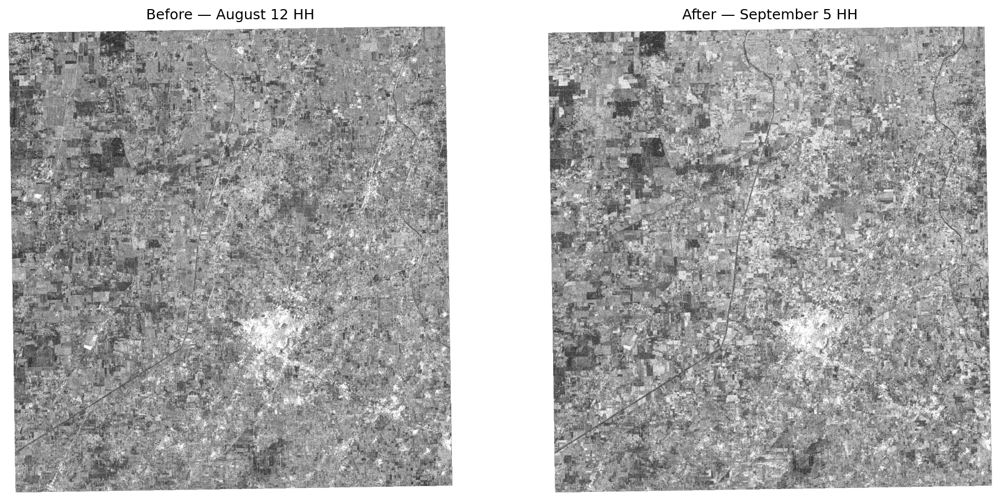

An Earth-observation story · Pakistan · 2026
What the clouds can't hide.
In the Indus Basin, a changing landscape raises a difficult question: when visible-light satellites cannot see clearly, what can radar tell us—and what can't it prove?
Clouds can hide the land. Radar can still observe it.
In the Indus Basin, a changing landscape raises a difficult question: when visible-light satellites cannot see clearly, what can radar tell us—and what can't it prove?
Optical satellites depend on a clear view of Earth's surface. Monsoon cloud cover can complicate that view at precisely the moment communities need information.
Radar sensors such as NISAR measure microwave backscatter and can observe day or night, through clouds. They detect physical changes—but do not automatically identify the cause.
Radar change is not synonymous with flooding. Water, wet soil, vegetation and surface geometry can all influence a return signal.

For a focused Jatoi study area, original NASA–ISRO NISAR GCOV observations were compared on the same 10-metre grid.
NISAR HH/HV radar backscatter baseline.
Copernicus Global Flood Monitoring (GFM) satellite-derived flood estimate.
NISAR HH/HV backscatter and candidate change clusters.

The newer focused Jatoi analysis produced clusters of radar-darkening candidates. Connected components were filtered to remove very small patches.
Methodology note: This is the newer Aug 12 → Sep 5 focused Jatoi subset (approximately 29.59–29.65° N, 70.75–70.82° E), distinct from the earlier 290-cluster study displayed elsewhere in the existing explorer. Do not combine their figures.
We compared the candidates with Copernicus Global Flood Monitoring observations from September 4, one day before the later NISAR acquisition.
Only 5.76% of GFM-covered candidate pixels overlapped GFM-mapped flood pixels. The GFM flood prevalence across the covered study area was 4.31%, giving just 1.34× prevalence lift—not strong demonstrated skill.
Radar candidates are deliberately selected by change thresholds. Their differing footprint from GFM is a reason for further research, not proof that all candidate sites flooded.
The observations differ in date and technique; GFM is itself a satellite estimate rather than ground truth. No validated NISAR flood precision, recall or F1 is claimed.
A map becomes useful when it distinguishes what was observed, what was inferred and what remains unknown.
Under the Clouds makes candidate change locations explorable, then exposes the limitations of independent evidence. For future work, acquisition-aligned optical interpretation, land-cover context and field verification can help.
Cropland overlap can describe agricultural exposure, not verified crop damage. Neither affected people nor monetary losses can be inferred from these candidate pixels.
Measured for the focused August–September pair.
100 overlapping candidate pixels, cross-date.
Not established by the current evidence.